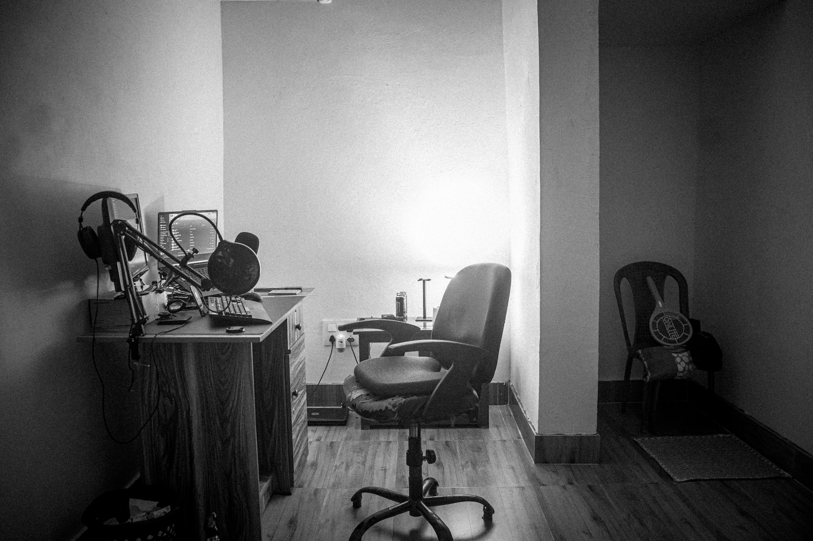

TL;DR
Side hustles can boost your income significantly with a structured approach. Freelancing offers immediate opportunities and can generate up to $1,500/month. Avoid common pitfalls like overcommitment and mispricing your services.
Who Should Embrace Side Hustles for Extra Income?
Best suited for remote workers looking to supplement their income, side hustles offer flexibility without the commitment of a second job. For example, if you work as a project manager, freelance consulting or offering courses in project management could leverage your existing skills.
With many remote roles blending work and life, carving out pockets of time for these endeavors can lead to an additional $500 to $1,500 per month.
Why Common Advice on Side Hustles Fails
### Why Common Advice on Side Hustles Fails
Many people assume that side hustles require massive time investments for minimal returns, leading to burnout and frustration. Take blogging, for example.
Common advice suggests that anyone can make money this way, yet it often overlooks the reality of dedicating 15 to 20 hours a week on content creation, SEO optimization, and marketing efforts to stand out in a saturated market.
In the first few months, a blogger may struggle to see any significant traffic. Statistically, only 1 in 10 blogs even reach profitability within the first year, which can be discouraging for remote workers looking for quick wins.
As a tradeoff, some remote workers might spend months crafting a blog about vegan cooking, investing time in creating high-quality recipes and images.
But they may find that the market is already saturated with established bloggers and influencers, diverting their efforts away from more promising, immediate freelancing gigs—like graphic design or copywriting—that could earn them $50 to $100 per hour with minimal startup time.
Another common pitfall is the initial investment in side hustles that might not yield returns. For instance, a remote worker could spend $2,000 on online courses or certification in a sought-after field like web development, only to find that the market is flooded with competitive candidates offering similar services.
Consider the case of Sarah, a remote marketing manager who decided to start an Etsy shop selling handmade jewelry. She spent three months and around $1,500 on materials, photography, and listing fees.
After launching her shop, she made only $300 in sales over six months
The Core Workflow for Launching a Freelance Service
To successfully launch your freelancing journey, follow this approach: 1. Identify Your Niche: Pick a service that resonates with your skills, like graphic design or digital marketing. 2. Create an Online Portfolio: Dedicate a week to crafting a basic website showcasing your work. Use platforms like Wix or Squarespace. 3. Set Your Rates: Research competitors to decide your pricing strategy. This will be crucial; many freelancers start by underpricing, which undercuts potential profits. 4. Marketing: Spend another week on social media and freelance platforms like Upwork to build your client base. 5. Get Feedback and Adjust: After landing your first few clients, gather actionable insights to refine your service.
A Real Example of Freelancing Success

### A Real Example of Freelancing Success
Take Sarah, a graphic designer who turned her passion into a freelance career. In her first month, she managed to secure three clients, each project focusing on logo design.
By charging $300 per project and dedicating an average of 10 hours to each, Sarah earned $900. However, she encountered significant challenges early on.
Sourcing clients proved difficult, and she often spent hours on social media and job boards without immediate results, leading to feelings of frustration and self-doubt.
Recognizing the need for change, Sarah took a step back and critically evaluated her portfolio. She realized it lacked standout designs that showcased her full range of skills.
By dedicating two weekends to developing new work and updating her website, she aimed to attract higher-paying clients.
Within three months of launching her revised portfolio, she was not just attracting attention but was also able to increase her rates to $500 per project.
With a better online presence, she secured five clients in the following month. Each project, still averaging 10 hours of work, brought in $2,500—a notable jump from her initial earnings.
However, with this success came trade-offs. The increased workload meant longer hours and less free time, affecting her work-life balance. Yet, Sarah saw this as a valuable trade-off since the extra income allowed her to invest in a course to refine her skills further.
After taking the course, she was able to offer additional services like web design, leading to diversification in her projects.
Mistakes and Tradeoffs to Avoid in Your Side Hustle
### Mistakes and Tradeoffs to Avoid in Your Side Hustle
Many side hustlers fall into common traps that can undermine their success. One significant mistake is overcommitting without evaluating the demands of their primary job.
For instance, if you work a full-time job from 9 AM to 5 PM and take on freelance graphic design work for an additional 20 hours a week, you might quickly find yourself overwhelmed.
This can lead to burnout—both in your primary role and your side hustle—resulting in missed deadlines and decreased performance, possibly impacting your day job's stability.
Ignoring the importance of business structure is another prevalent mistake. If you fail to set up a proper legal entity, like an LLC, you expose your personal assets to liabilities arising from your freelance work.
For example, if a client claims you didn’t meet their expectations and decides to sue, your home and savings could be at risk. The cost of creating an LLC can vary, typically ranging from $100 to $500, but it’s a safety net that’s often worth the investment.
Moreover, it’s crucial to assess your existing time commitments against potential freelancing opportunities. If you aim to make an additional $1,000 monthly through side hustling, you might need to invest 15-20 hours a week into this work.
Prioritizing high-income tasks means recognizing trade-offs—perhaps sacrificing your weekends or late evenings that would otherwise be spent with friends or family.
Consider a scenario involving Anna, a remote software developer. Eager to supplement her income, she launches a side hustle creating websites for local businesses.
Concrete Next Steps for Choosing Your Side Hustle
Ready to embark on your side hustle? Start with these concrete steps: 1. Audit Your Skills: Write down skills you excel at or are passionate about. 2. Research Profitability: Using tools like Google Trends, realize which niches have demand. 3. Select a Hustle: Decide between options like freelancing, online tutoring, and reselling products! 4. Build a Execution Timeline: Draft a plan based on the 30-day schedule from this article to structure your start effectively.
Commit to weekly reviews for essential tweaks; if you've selected tutoring, assess how many students you've attracted weekly.
FAQ
What type of side hustles are best for full-time remote workers?
Freelancing and online tutoring are popular options as they allow flexible hours and align well with existing skills.
How much time should I dedicate to my side hustle each week?
Aim for at least 5-10 hours weekly initially; this allows for steady progress while balancing your main job.
This article is regularly reviewed for practical usefulness and updated when information changes.
Next step
Use the article as a decision point, not just reading material. Your next system matters more than more browsing.
Search more articles
Find related tools, workflows, and guides.
Photo credits
- Photo 1: Nubelson Fernandes via Unsplash
- Photo 2: JC Gellidon via Unsplash
- Photo 3: Alex Ghizila via Unsplash
- Photo 4: Ritupon Baishya via Unsplash
- Photo 5: Elba Sindoni via Unsplash